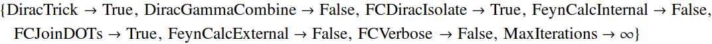
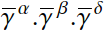
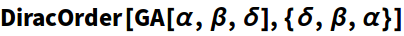
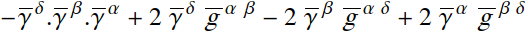
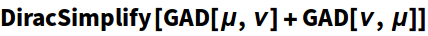
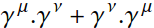
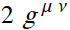

FEYN CALC SYMBOL
DiracOrder
DiracOrder[exp]
orders the Dirac matrices in exp lexicographically.
DiracOrder[exp, orderlist]
orders the Dirac matrices in exp according to orderlist.
Details
- DiracOrder is also an option of DiracSimplify and some other functions dealing with Dirac algebra. If set to True, the function DiracOrder will be applied to the intermediate result to reorder the Dirac matrices lexicographically.
| In[159]:= |
| Out[159]= |

|
Examplesopen all
Basic Examples (5)
| In[2]:= |
| Out[2]= |

|
| In[3]:= |

|
| Out[3]= |

|
| In[1]:= |

|
| Out[1]= |

|
| In[2]:= |
| Out[2]= |

|